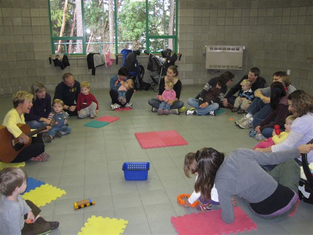
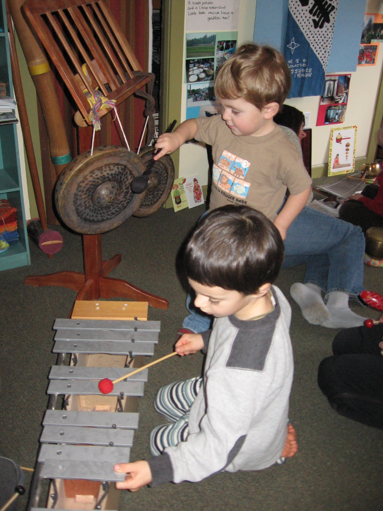
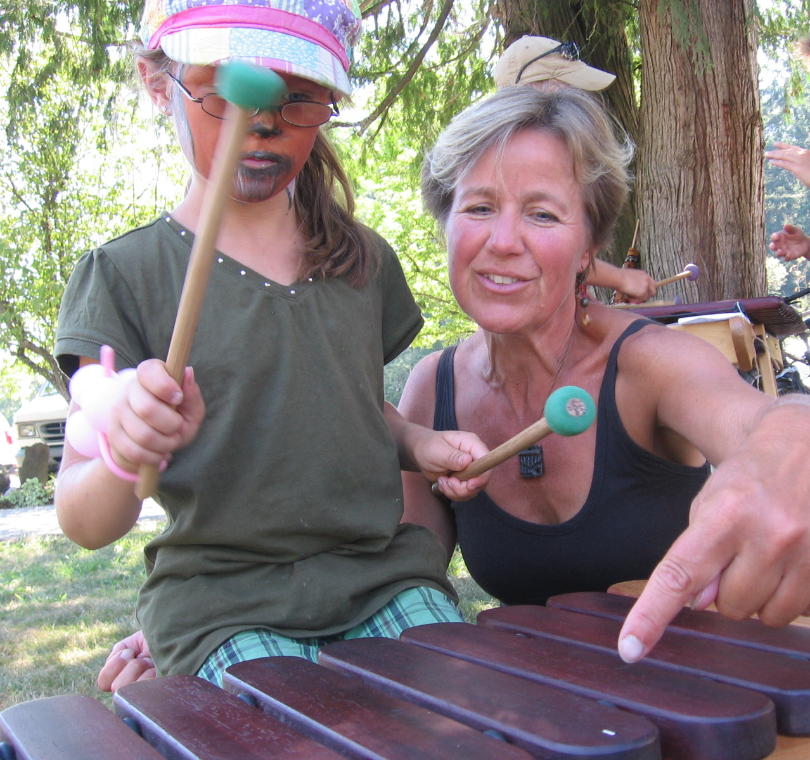
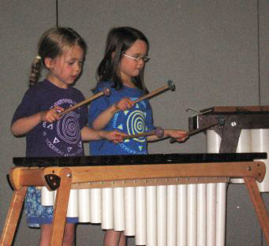

(10 wk. sessions)

50 minute classes with full parent participation are held at the Shawnigan Lake Community Centre to give space for maximum opportunity of movement.
A variety of upbeat activities encourage parents to find ways to make music part of their child’s daily routine.
Joyful, energetic and following the lead of the child, the classes include dancing, singing, puppets, manipulatives, participatory storytime, rhythm instruments, and free time for exploration.
In addition to developing the child’s emerging musicality, classes encourage social interaction and developing independence, while also providing a bonding experience for parent and child.
Many parents have connected with others in the group and found a new social network!
A variety of upbeat activities encourage parents to find ways to make music part of their child’s daily routine.
Joyful, energetic and following the lead of the child, the classes include dancing, singing, puppets, manipulatives, participatory storytime, rhythm instruments, and free time for exploration.
In addition to developing the child’s emerging musicality, classes encourage social interaction and developing independence, while also providing a bonding experience for parent and child.
Many parents have connected with others in the group and found a new social network!

(32 weeks) September to May

These playful exploratory classes are 1 hour long and focus on “whole child” development. Although the children attend the class without parents, there is lots of opportunity for involving families in the learning process.
The 3 yr. and 4 yr. old classes include parents for the first month, and then we create “surprises” to show the parents at the end of class in SHARING TIME.
This gentle transition really helps the less confident children to find their comfort level in developing independence. Movement oriented classes provide many opportunities for children to internalize the beat.
The classes develop music appreciation, encourage creativity and self- expression. Program includes: singing & vocal exploration, focused listening, movement, puppets, storytelling, roleplaying, simple notation games, and opportunities to explore and play a variety of rhythm instruments.
Home Materials are included to extend the classroom learning and involve the families in music-making.
The 3 yr. and 4 yr. old classes include parents for the first month, and then we create “surprises” to show the parents at the end of class in SHARING TIME.
This gentle transition really helps the less confident children to find their comfort level in developing independence. Movement oriented classes provide many opportunities for children to internalize the beat.
The classes develop music appreciation, encourage creativity and self- expression. Program includes: singing & vocal exploration, focused listening, movement, puppets, storytelling, roleplaying, simple notation games, and opportunities to explore and play a variety of rhythm instruments.
Home Materials are included to extend the classroom learning and involve the families in music-making.
(32 weeks) September to May

These classes still give parents an opportunity to share in the delight of making music together, with spontaneous gatherings at the end of many of the classes.
Movement oriented classes provide many opportunities for children to internalize the basic elements of music.
The classes encourage music appreciation, creativity and self- expression in addition to beginning to develop instrumental skill while teaching the fundamentals.
Program includes: singing, creative movement, puppets, storytelling, simple notation games, and ensemble work using rhythm instruments, xylophones, and leading to marimbas.
Home Materials are included to extend the classroom learning and involve the families in music-making.
Movement oriented classes provide many opportunities for children to internalize the basic elements of music.
The classes encourage music appreciation, creativity and self- expression in addition to beginning to develop instrumental skill while teaching the fundamentals.
Program includes: singing, creative movement, puppets, storytelling, simple notation games, and ensemble work using rhythm instruments, xylophones, and leading to marimbas.
Home Materials are included to extend the classroom learning and involve the families in music-making.
(32 weeks) September to May

Classes continue to be upbeat and playful, with a focus on playing marimba and percussion.
The students build on the fundamentals of music, continuing to become more familiar with musical theory through games and composing simple musical pieces.
In the marimba program, the students work as a team developing concentration, cooperation and listening skills as they focus on their part and learn how it fits within the whole. Their sense of timing is refined through the repetition of patterns which rely on a strong pulse.
A balance is kept between developing skill on the instrument, and inspiring a love of playing music and sharing the experience with others, in order to encourage a life-long musical habit.
The students build on the fundamentals of music, continuing to become more familiar with musical theory through games and composing simple musical pieces.
In the marimba program, the students work as a team developing concentration, cooperation and listening skills as they focus on their part and learn how it fits within the whole. Their sense of timing is refined through the repetition of patterns which rely on a strong pulse.
A balance is kept between developing skill on the instrument, and inspiring a love of playing music and sharing the experience with others, in order to encourage a life-long musical habit.
As the students continue on in the marimba program, music theory is made relevant through the activities and pieces they play on their instruments. They work as a team, developing strong collaborative skills as they go through the process of creating & arranging simple original compositions, as well as refining more intricate pieces. They learn how to hear more than just their part in the ensemble, and how the many layers of sound complement each other to create a unified interesting sounding whole. Their sense of timing is refined through the repetition of patterns which rely on a strong pulse. Some performing opportunities occur during the year.
Returning experienced students continue on with additional opportunities to be part of the process in choosing, arranging, composing, and performing more advanced marimba pieces. At this level, student groups are often invited to perform for community functions, and fundraising events.
This rhythm based program offers an amazing opportunity for “kids of all ages”, and levels of ability, to be very physically involved in creating energetic, upbeat multilayered music.
Playing music based on repeating patterns of interlocking rhythms and harmonies, the students develop concentration, cooperation and listening skills as they focus on their part and learn how it fits within the whole.
Their sense of timing is refined through the repetition of patterns which rely on a strong pulse.
Simple to complex, every part is necessary to create the unique sound of marimba music.
In weekly classes, we explore various musical styles and we also enjoy creating our own compositions.
“We always look so forward to our weekly marimba fix … it is great fun to share it as a family!”
Playing music based on repeating patterns of interlocking rhythms and harmonies, the students develop concentration, cooperation and listening skills as they focus on their part and learn how it fits within the whole.
Their sense of timing is refined through the repetition of patterns which rely on a strong pulse.
Simple to complex, every part is necessary to create the unique sound of marimba music.
In weekly classes, we explore various musical styles and we also enjoy creating our own compositions.
“We always look so forward to our weekly marimba fix … it is great fun to share it as a family!”
Adults, if you want to discover the therapeutic value of marimba playing in a relaxed supportive atmosphere, come & join us on Monday nights for 8 - 10 week sessions of mind-filling, brain-energizing music making!
Let the cares of the week slip away....
Beginners welcome!
“This class was the best therapy!! It was absolutely a blast! I couldn’t think about anything but trying to hit the right keys…”
Let the cares of the week slip away....
Beginners welcome!
“This class was the best therapy!! It was absolutely a blast! I couldn’t think about anything but trying to hit the right keys…”